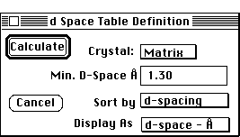

Distributed By: Virtual Labs
Desktop Microscopist tables have single dialog boxes to set selection
parameters. The only exception to this rule is the Useful Information window
which has no setup dialog box.
D-space Table:Setup Dialog
PATH...File Menu:New:Tables:d-spacings...

d-Space Table Definition Dialog Box
The d-space Table definition dialog box allows the selection of the crystal
which Desktop Microscopist will use to calculate and plot a table of d-spacings.
This selection is accomplished using the Crystal: pop-up menu. In addition,
the maximum hkl values which will be used to calculate d-space information
and whether to sort by d-spacings, structure factor or extinction distances
may also be specified. If a sort by extinction distance is selected, the
third column which normally lists the structure factor for each plane will
contain the extinction distance values calculated for the selected beam's
accelerating voltage. For x-rays this would correspond to the characteristic
x-ray wavelength.
Author: J.ames T.
Stanley
 Desktop
Manual:Dialog Boxes
Desktop
Manual:Dialog Boxes
Distributed By: Virtual Labs
Last Updated:1/12/96 Sat, Apr 27, 1996